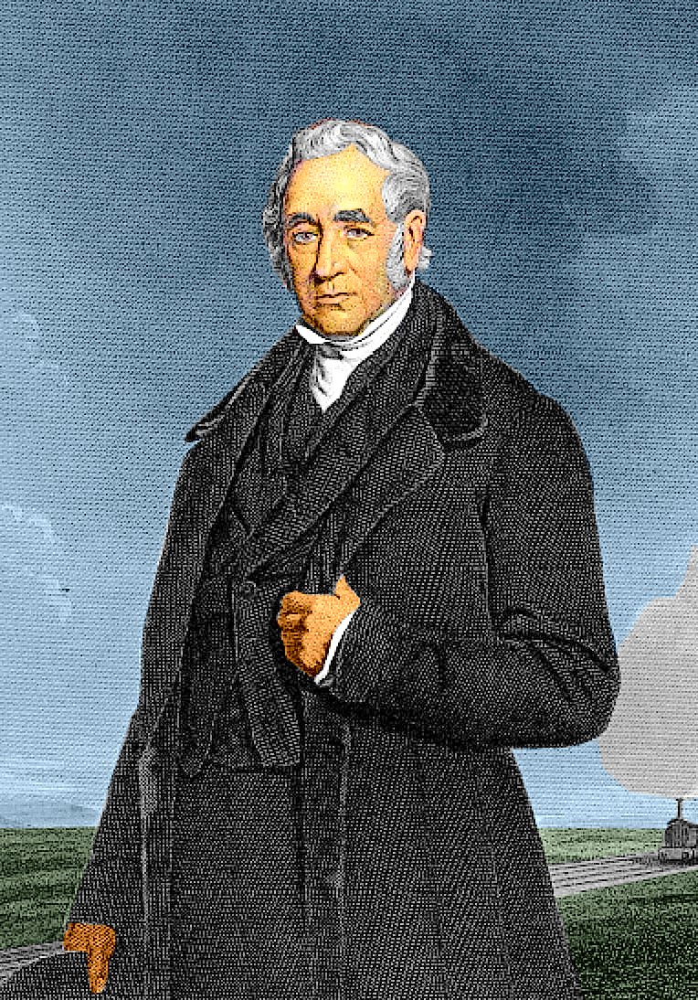

|
George Stephenson (1781-1848) è stato un ingegnere britannico considerato il padre delle ferrovie moderne.
George Stephenson nacque il 9 giugno 1781 a Wylam, nel Northumberland, in Inghilterra. Figlio di un minatore, ricevette una limitata istruzione formale e iniziò a lavorare nelle miniere di carbone a una giovane età.
Trascorse molti anni lavorando nelle miniere di carbone del Northumberland. Durante questo periodo, acquisì una profonda comprensione delle macchine a vapore e delle locomotive a vapore utilizzate nelle miniere.
Famoso per aver progettato e costruito la "Rocket", la locomotiva a vapore che vinse la famosa "Rainhill Trials" nel 1829, organizzata per selezionare la locomotiva per la Liverpool and Manchester Railway, la prima linea ferroviaria interurbana del mondo. La Rocket, con il suo design innovativo e le sue prestazioni superiori, dimostrò il potenziale delle locomotive a vapore per il trasporto ferroviario su lunghe distanze.
Dopo il successo della Rocket, Stephenson divenne uno dei principali progettisti e costruttori di ferrovie nel Regno Unito e in Europa. Supervisionò la costruzione di numerose linee ferroviarie chiave, incluso il Liverpool and Manchester Railway, e contribuì alla progettazione di ponti, tunnel e altre infrastrutture ferroviarie.
Contribuì in modo significativo allo sviluppo della tecnologia ferroviaria. Introdusse molte innovazioni pratiche, tra cui la disposizione delle rotaie su travetti di legno (una forma primitiva di traversine) per migliorare la stabilità e la durata delle rotaie, e contribuì alla progettazione di locomotive a vapore più efficienti ed economiche.
George Stephenson è considerato uno dei più grandi ingegneri della storia e il padre delle ferrovie moderne. Il suo lavoro ha contribuito in modo significativo all'industrializzazione e al trasporto nell'età vittoriana e ha aperto la strada alla diffusione delle ferrovie in tutto il mondo, rivoluzionando i viaggi e il trasporto delle merci.

|
|